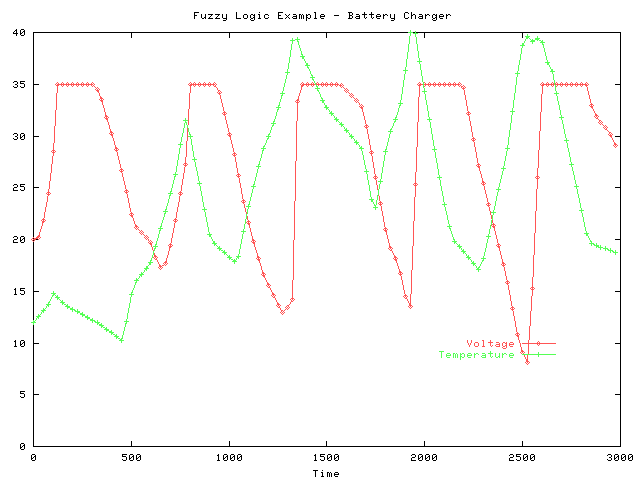

In an effort to learn more about AI programming techniques, I'm trying to port M. Tim Jones' AI Application Programming examples from C to Ruby. I'm planning to port these in no particular order.
The relevant chapters are:
- Simulated Annealing
- Adaptive Resonance Theory
- Ant Algorithms
- Neural Networks and the Backpropagation Algorithm
- Genetic Algorithms
- Artificial Life
- Expert Systems
- Fuzzy Logic
- The Bigram Model (Hidden Markov Models)
- Intelligent Agents
Tim was kind enough to pass on the book's erratum to me - current as of Oct 06 2003.
This project is hosted by RubyForge, forums and such-like are here.
General musings
- The code in this book doesn't use setjmp() or doubly-indirect pointers or other hairy C stuff - it's mostly just loops and functions. This makes porting it a lot easier.
- Watch for C code like this:
if (foo) {
}
It needs to be translated to
if (foo != 0) {
}
in Ruby. In other words. "non zero" in C needs to be translated to "not nil and not zero" in Ruby.
- I'm porting in several steps:
- Do an initial "raw" port by just translating C to Ruby
- Pick a blob of associated data items, refactor them into a Ruby class
- Add tests, back to step 2
- Ruby is _so_ much less wordy than C - not having to type all the parentheses and semicolons and such is really nice.
- If someone wanted to do this and preserve speed, it'd probably be best to just write Ruby extensions that wrap the AI stuff (thx to Rich Kilmer for this comment)
- Writing more tests will alleviate some problems I'm having - i.e., forgetting the "@" on a instance variable. It's kind of an odd situation, though... I don't really understand how some of the algorithms work, so writing tests for them is hard since I have to step thru the entire function with sample values. I feel like the tests I'm writing are too high-level or something.
Chapter 9 - Fuzzy Logic
Updated 10/16/03: Battery charger and predator prey examples complete, code is here.
- The predator/prey example was fun because I had to relearn some trigonometry. Also, I had to tweak the membership functions a bit - the first time through I made the center spike profile too wide and so the predator kept waiting too long to turn towards the prey.
- To run the programs and generate the graphs, move to the
src/ch9 directory and do a ./fuzzy.rb > predator_data.txt && ./predator_gnuplot to regenerate the predator graph, or a ./fuzzy.rb -battery > battery_data.txt && ./battery_gnuplot to regenerate the battery graph.
Battery charger example: below is a graph (thanks gnuplot!) showing the relationships between the battery's voltage and temperature - you can see when the fast charger kicks in and when it falls back to trickle charge mode.

Predator/prey example: below is an image of the predator seeing the prey and turning towards it.